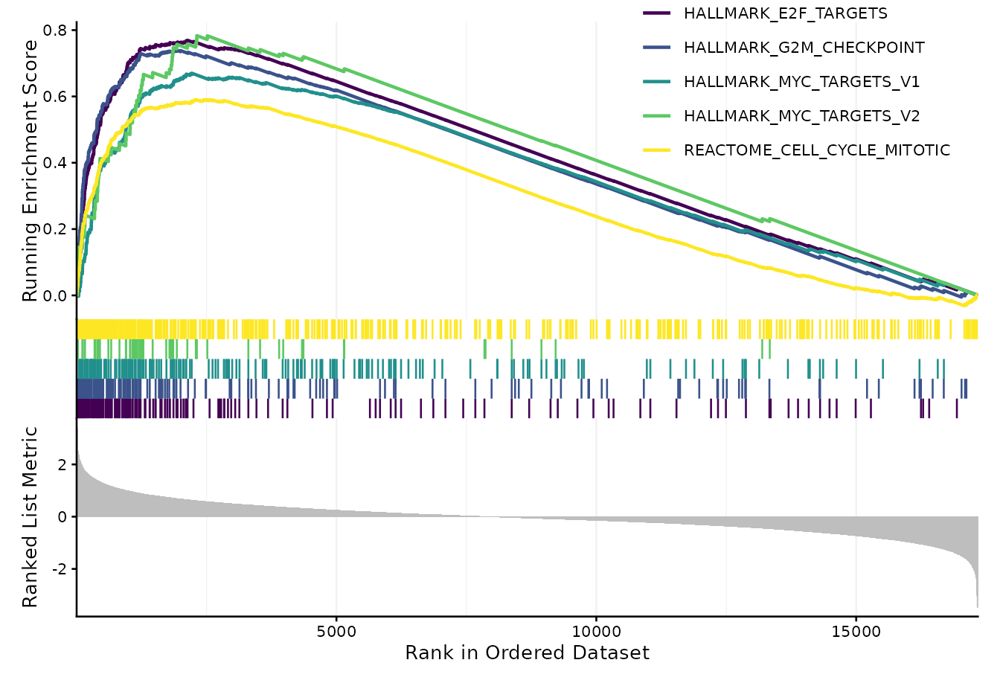

The gseaPlot function generates a publication-quality
visualization of Gene Set Enrichment Analysis (GSEA) results from a
SummarizedExperiment object. It wraps and extends
enrichplot::gseaplot2() with additional control over layout,
color palette, font size, subplot arrangement, and significance table
display options.
Arguments
- seDataFgsea
A
SummarizedExperimentobject containing GSEA results that can be processed by the internal.extractDF()function withtype = "gseaRaw".- showCategory
Numeric or character. The number of top-ranked gene sets to visualize, or specific pathway names to plot. Default is
5.- title
Character. Optional plot title displayed above the enrichment score curve. Default is an empty string (
"").- colorPalette
Character vector. Custom color palette for pathways. If
NULL, the default viridisLite palette ("D") is used. Default isNULL.- fontSize
Numeric. Base font size for plot text. Default is
10.- relHeights
Numeric vector. Relative heights for the main enrichment score plot, gene tick mark panel, and ranked metric plot. Default is
c(1.5, 0.5, 1).- subPlots
Integer vector. Specifies which subplot(s) to display:
1= running score,2= gene ticks,3= ranked list. Default is1:3.- pvalueTable
Logical. Whether to include a p-value summary table in the enrichment plot. Default is
FALSE.- pvalueTableColumns
Character vector specifying the statistical columns (e.g.,
"pvalue","p.adjust") to include in the table. Default isc("pvalue", "p.adjust").- ESgeom
Character. Type of geometry for drawing the enrichment score curve. Must be one of
"line"or"dot". Default is"line".
Value
A single ggplot2 object if one subplot is selected, or a
combined aplot::gglist object when multiple subplots are rendered.
Details
This function produces a comprehensive visualization combining the
running enrichment score, gene positions, and ranked list metrics in a
unified layout. It improves upon enrichplot::gseaplot2() by
introducing:
Customizable subplot arrangement (
subPlots)Optional significance table overlay (
pvalueTable = TRUE)Adjustable color palettes via
colorPaletteFlexible layout scaling using
relHeightsSupport for multiple gene sets or a single enriched term
Examples
data("sig2Fun_result")
gseaPlot(seDataFgsea = sig2Fun_result)
